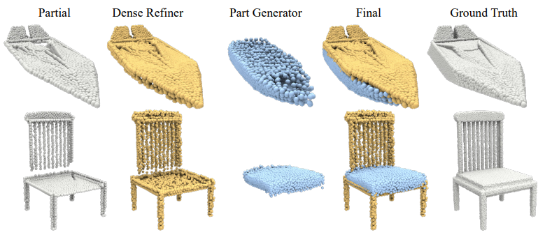
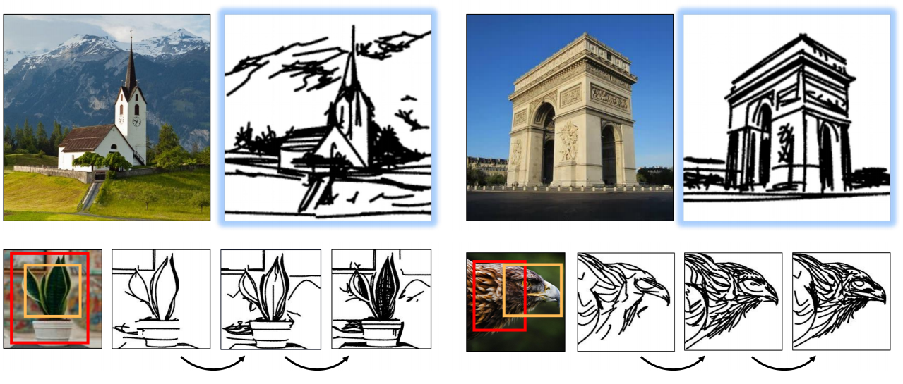
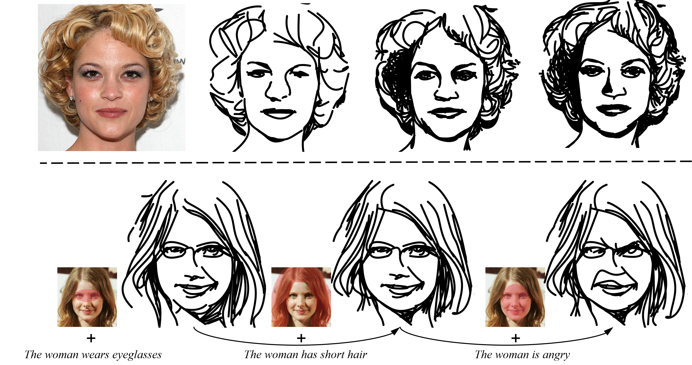
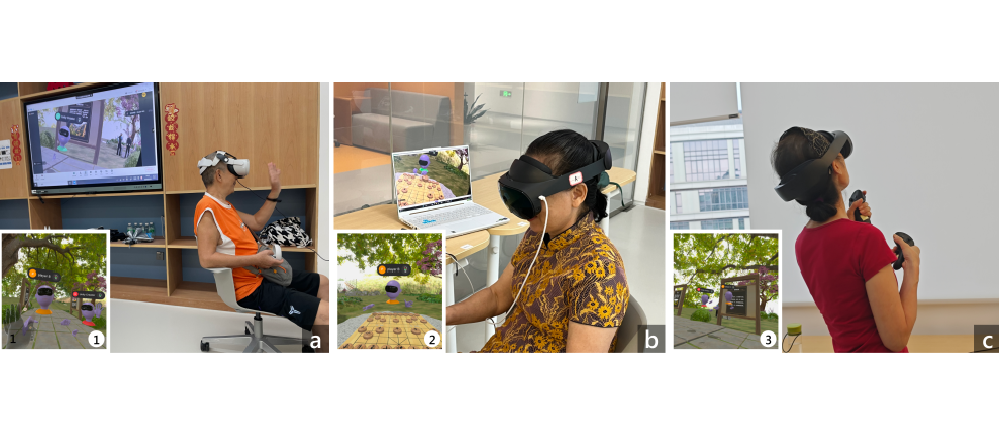
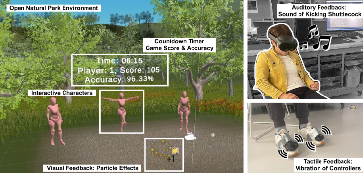

M.Phil. Student · HKUST(GZ)
Hello, I'm Yiqi
I am a second-year M. Phil. student at
I am interested in
Please reach out if you think we can collaborate or share ideas :)

News
01 / 04- 2026/04 Work ProtraVec has been accepted to ICME 2026.
- 2025/09 Work VR-Shuttlecock has been accepted to IMWUT 2025!
- 2025/04 Work MROSS has been accepted to ICME 2025.
- 2025/01 Work RemoteChess on constructing VR community for older adults was accepted by CHI 2025.
- 2023/12 I've joined APEX Group under supervision of Prof. Mingming FAN.
- 2023/09 Started MPhil in Computational Media and Arts (CMA) at HKUST(GZ).
- 2023/08 Our work SD-Net has been accepted as an Oral presentation at ACM MM 2023.
- 2022/09 Research Assistant in Computer Graphics under supervision of Prof. Ruihui LI.
Publications
02 / 04


HCI
RemoteChess: Enhancing Older Adults' Social Connectedness via Designing a Virtual Reality Chinese Chess (Xiangqi) Community
CHI 2025

HCI
VR-Shuttlecock: Exploring the Possibility of Virtual Reality Shuttlecock Kicking with Multi-Sensory Feedback for Empowering Older Adults in Balance Training
IMWUT 2025
Projects
03 / 04Research & Development
Algorithm · Vector Drawings at Different Abstraction Levels
Interest
04 / 04A small personal corner for things I enjoy outside research.
♡
TV Shows
- Friends
- Breaking Bad
- Criminal Minds
- Wednesday
- The Knockout
○
Movies
- Love most: About Time, The Notebook, Flipped, Love Letter
- Animation: Coco, I Am What I Am, Spies in Disguise, Sing, Rise of the Guardians, Monsters University, Finding Nemo, Ron's Gone Wrong, Soul, Robot Dreams, Alita: Battle Angel, Big Hero 6, The Incredibles, Yao-Chinese Folktales
- Mystery: Knives Out, Karma, The Invisible Guest
- Drama: Fight Club, The Shawshank Redemption, Shutter Island, The Pianist, A Beautiful Mind, The Silence of the Lambs
✦
Handcrafts
Pipe cleaners 🧶, Puzzles 🧩
↗
Recently Trying
Tennis 🎾, Fitness 🏋️